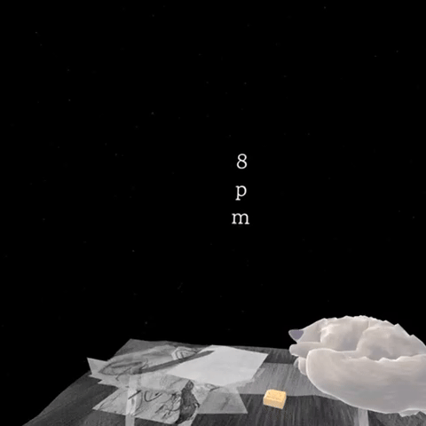

1. Reflect through text input
Via a virtual keyboard, users answer reflective questions such as "What do you usually see outside your window at 8PM?" Their response shapes the imagery that follows.
8pm and the Cat is a 13-minute, AI-driven VR narrative offering a personalised and emotionally adaptive experience.
Through the interwoven perspectives of Haru and Mina, users navigate the tender space between longing and healing, where time stands still, but memories continue to breathe.
After losing his partner Mina in the Itaewon crowd crush, cartoonist Haru's world freezes at 8PM. He drifts between two realities, one where she still arrives home, and one where she never will. In this generative VR experience, monologues and visuals emerge in real time, each moment fleeting, each encounter singular. The audience steps into Haru's stillness, gently bearing witness to the enduring weight of her absence.
The story was inspired by the idea that just as ants live in a two-dimensional world, unaware of the third, we humans may not fully perceive the fourth dimension—time. In this view, past, present, and future may coexist, and those we've lost might still be with us in ways we can't yet perceive. We wanted this narrative to go beyond one man's grief and speak to a collective human experience of loss, memory, and connection. To bring this idea to life in an immersive and deeply personal way, we turned to AI.
Personally, this project means a lot to me because my grandmother passed away while I was in the UK. Unfortunately, due to time zone difference and flight hours, I couldn't go to her funeral, and this loss lingered with me for a long time. But my friend told me that she is always with you in a fourth dimension that we can't see, but she is still with you. While making this VR film, I thought about my grandmother a lot. Hoping that for someone who has lost someone, this film can help them relive.
Q. How can AI shape interactive storytelling in XR?
As both prototyper and developer, I spent several months experimenting with how generative AI could help bring this vision to life, crafting a story that responds and adapts to each user. I explored ways to generate voice narration, images, and room textures in real time, and tested how the story could change depending on what the user types or chooses.
Two key prototypes emerged from this phase: Gaze to Voice and StyleShift. Each explored a different technique for real-time AI storytelling. Together, they not only helped refine the final system used in 8pm and the Cat, but also revealed how AI can unlock new emotional and spatial dimensions in XR narrative design.

Via a virtual keyboard, users answer reflective questions such as "What do you usually see outside your window at 8PM?" Their response shapes the imagery that follows.

GPT-4o generates illustrated comic panels and transforms the room's textures in real time. As Haru's emotional state shifts, both the 2D visuals and the surrounding space change to match the mood.

Emotional voice-over monologues are dynamically generated by GPT and synthesized through ElevenLabs using custom-trained voice models of the main characters, creating a layered dual-perspective narrative.
As lead developer and the only engineer on the team, I owned the full AI narrative stack in Unity, from early prototypes through the final build.
I worked on:
Each viewer's story is different, images and monologues shift dynamically based on user input, making the experience deeply personal and reflective.